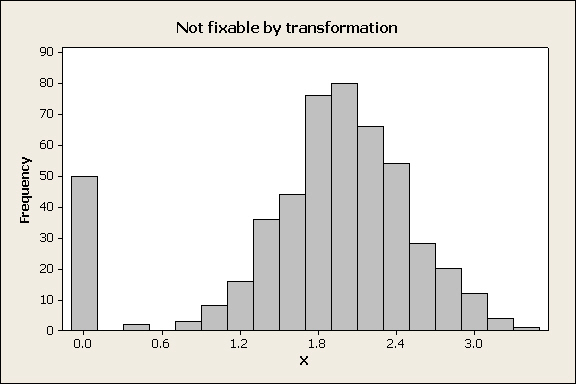
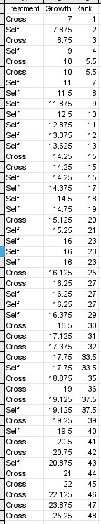
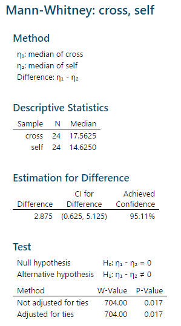
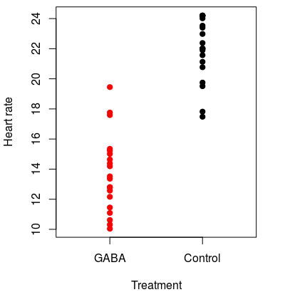
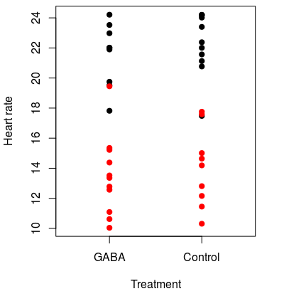
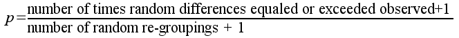
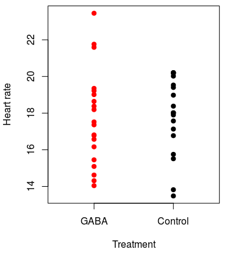

Introduction - nonparametric testing
Transformations are able to solve many problems with the distribution of data, but there are some data problems they don't solve. Some data sets can't be made normal, or can't be made to have equal variances, or can't be made to have the same shapes of distribution in both of the groups to be compared. If any of these things are true about your data, you'll need another approach than parametric testing.
Transformations work by changing the relative spacing between observations - for example, applying a log-transformation to a skewed distribution stretches the left tail and compresses the right tail of the distribution to make it more symmetrical. If there are many observations in a data set that have identical values then there is no mathematical function that will spread the numbers apart, and a transformation will not help. The most common case would be when there are multiple zeros in a data set. For example:
| 
The tall bar at 0 is due to the fact that 50 out of the 500 numbers in the data set have an identical value of 0. Whatever transformation is applied, all 50 of those observations will be transformed to the same number, and the variable will still not fit a normal distribution. This looks like a really odd data distribution, but it can happen. For example, ornithologists who study bird reproduction check the number of chicks that fledge from nests in the spring, and it's not uncommon for predators to find a nest and eat all the chicks. All those nests will have 0 chicks fledge, but the rest of the nests that aren't depredated will have some number of chicks that fledge, with usually a bell-shaped distribution around a mode, much like the distribution above. What should you do if you have a distribution that can't be fixed with a transformation?distribution |
Nonparametric alternative to the independent-samples t-test - the Mann-Whitney U
Fortunately for us, there are alternatives. It's possible to test null hypotheses without having to use a t-distribution, and this often reduces the number of assumptions we have to meet in order to get valid results. Because these procedures do null hypothesis tests without using estimates of parameters of distributions they're collectively called non-parametric tests, but they don't share much in common.
Most standard non-parametric tests use differences in the rank ordering of data, and discard information about the magnitudes of the data points. We'll try out the non-parametric equivalent to the two sample t-test in the next exercise.
| 
As an example, the Mann-Whitney U test is considered a nonparametric alternative to an independent-samples t-test in the sense that it can be used to compare two groups for differences in the location of a measure of central tendency for the data. However, whereas the t-test tests for differences in mean, Mann-Whitney U tests for differences in the median - so, the null hypothesis for the U test is that the medians are the same for both groups. The Mann-Whitney U test uses the rank order of observations, rather than the magnitude of the data values to obtain a p-value. The null hypothesis is thus that the median for the two groups is the same. To do a Mann-Whitney U test by hand, the data are sorted from smallest to largest value and then ranked. For example, the Darwin's Mignonettes data to the left are organized in a stacked format, with growth of each plant in one column and treatment type in another. The growth data are sorted from smallest to largest. The ranks assigned to them indicate the order in which they appear, but don't maintain any information about the amount of growth. Tied ranks (such as the 5th and 6th, and several others in the set) are assigned the mean of the two ranks for both of the observations. Once the data are ranked, one of the two groups is chosen and a "rank sum" is calculated (R), which is literally the sum of the ranks for one of the groups. The p-value will be the same whichever group is used, so the choice doesn't matter, but the calculations are easier if you use the group with the smaller sample size. In this case there are 24 of each treatment, so we'll use the crossed plants - the rank sum for the crossed plants is R = 704, which is the sum of the "Rank" column for all of the "Cross" plants. Next, we must calculate the two test statistics, U1 and U2. U1 is calculated with the formula: U1 = n1n2 + (n1(n1 + 1)) / 2 - R = (24)(24) + (24(24+1))/2 - 704 = 172 U2 is calculated with the formula: U2 = n1n2 - U1 = (24)(24) - 172 = 404 With small sample sizes (of 10 or fewer in each group) you could look up a critical value in the back of your book (statistical table E) and compare it to the larger of the two U values (404 in our case). But, with a large sample size like in this study, a normal approximation is used to get a p-value. First, we calculate an approximate z-value using this formula: z = (2U - n1n2) / (sqrt(n1n2(n1+n2+1))/3) You would use whichever U value is greatest, so this becomes: z = (2(404) - (24)(24)) / (sqrt((24)(24)(24+24+1))/3) = 2.39
The probability for this z-value comes from a z-table. A z-value of 2.39 has a probability of 0.0084, which is just for the upper tail. Multiplying by 2 gives us 0.017 for a two-tailed test. Since the p-value is less than 0.05 we would reject the null, and conclude that the crossed plants had a higher median than the selfed plants. |
The Mann-Whitney U test in MINITAB
MINITAB's Mann-Whitney test output looks like this.
The "Method" gives the values that will be tested, which are the population medians (Greek lower-case eta is the standard symbol for a population median).
The "Descriptive Statistics" are the sample sizes and medians for each group.
The next block of output is labeled "Estimation for Difference", but if you subtract 14.625 from 17.5625 you do not get the difference listed there. Instead, the estimated difference MINITAB reports is based on taking differences between all possible pairs of data values between the groups, ranking the differences, and then reporting the median of these differences.
The "Test" block gives the actual hypothesis test result. The null and alternative tested are given, and then there are two tests reported, both of which use the W test statistic. MINITAB uses W as the symbol for the rank sum of the first group instead of R, but this is the same rank sum reported above. W is used in both of the tests presented, but in different ways:
- For the test not adjusted for ties, MINITAB uses W to calculate a z-approximation, and from that a p-value.
- For the test adjusted for ties, MINITAB uses the Mann-Whitney U distribution to calculate the p-value.
Since there are no ties the two results are identical, but if there are ties, or if sample sizes are small the second test adjusted for ties is preferred.
How does this result compare with what we would get with a two-sample t-test? The plant growth data met the assumptions for a t-test, and if we used a t-test to analyze the data we would get a p-value of 0.032. This is pretty typical - when the data meet the assumptions of a t-test the results usually agree between the t-test and Mann-Whitney U (but the t-test tends to be a little more powerful). When you don't meet the assumptions of a t-test, Mann-Whitney is usually preferable.
Assumptions of nonparametric tests
Although non-parametric tests usually make fewer assumptions about the distribution of your data than parametric tests do, they aren't completely assumption free. For example, the Mann-Whitney U test doesn't assume the data are normally distributed, but the p-value won't be accurate unless the distributions are the same for both groups (in other words, the data don't have to be normal, but if one group is right-skewed the other has to be as well). If you can't meet this assumption, you should use another approach that assumes nothing about the distribution of your data, which is a randomization test.
Randomization testing
The other major approach, randomization testing, takes advantage of the tremendous computing power we have available in even our most humble desktop computers today.
To understand randomization testing, we need to think again about the way that t-tests (and other types of null hypothesis tests) work.
- We devise a null hypothesis, which in a t-test is... what? Click here to see if you're right. Differences between sample means are expected to occur, but they represent random sampling from a single population if the null is true.
- We calculate a measure of how different the group sample means are. We use the t-statistic when we do a t-test, which is just the number of standard errors between the sample means. We call this value the test statistic, and in a t-test the test statistic is called the observed t-value, or tobs.
- We then compare the our test statistic (tobs) to a mathematical model of how many standard errors between group means to expect when we randomly sample two groups from a single population. This is called a sampling distribution, and the one we use for a t-test is called the t-distribution. If the observed t-value is typical of values that happen by chance, we conclude that the difference is probably due to random chance.
- How we judge if the observed t-value is typical is by calculating a probability of obtaining a difference as big or bigger than the observed one. Big probabilities indicate that random outcomes as big as we observed can happen easily by chance.
- A small probability of random outcomes as big as we observed is evidence that the difference is real, and not just a random chance occurrence.
Randomization testing functions exactly the same way. The only differences are that:
- We will use the difference between means as the test statistic, instead of using tobs
- We will generate a distribution of random differences with the computer, rather than using the t-distribution as a mathematical model of random sampling.
How, then, do we get a distribution of random outcomes?
| 
To understand the logic of a randomization test, consider the hypothetical experiment on the effects of the neurotransmitter GABA on heart rate in lobsters. We could go down to Ralph's, buy a bunch of live Maine lobsters, and randomly assign them to either a group that will receive GABA or a group that will not. The lobsters that receive GABA are the "treatment" lobsters, and the ones that are not given GABA are the "controls". We could then apply GABA to the treatment lobsters, and measure the heart rates of all the lobsters in each group. Because the lobsters all came from the same tank and were randomly assigned to treatment groups, if GABA has no effect on heart rate then the "control" and "GABA" groupings are arbitrary, and heart rates of individuals in both groups are really just random draws from the same population. Our observed lobster data might look like this graph on the left. The mean heart rate for GABA treated lobsters is 13.7 and for controls it's 21.9, for a difference of 8.2 beats per minute. This looks like a treatment effect, but it could be due to random chance. We should test a null hypothesis of no difference between the groups. |
|
So far, then we have: Step 1 - devise a null hypothesis of no difference in means between GABA and control animals. Step 2 - we have a test statistic equal to 8.2, which is the observed difference between group means. Now we need to figure out Step 3 - how do we get a distribution of differences to expect by chance? In randomization testing we have the computer generate it for us from our data. |
|  We do this by recognizing that if the null is true the GABA and control groups aren't actually different, and calling data points "GABA" or "control" is a meaningless label. If this is true, we should be able to change the labeling on the groups and still get differences of 8.2 or bigger on a regular basis. For example, we could randomly assign the data values to new groups, like in the graph to the left. The original groups are still indicated by the color of the dots, and the group that each data point was randomly assigned to is indicated by the label on the x-axis. You can see that some of the actual GABA treated lobsters (black dots) were randomly assigned to the control group, and some controls (red dots) were placed in the GABA group as well. This first random shuffle of the data gives us group means for GABA of 17.1, and the for the control group of 18.6, for a difference of only 1.5 BPM. This is much smaller than the 8.2 BPM difference observed, so based on just this single random re-grouping the observed difference looks much bigger than we would get by chance. Of course, one random shuffle isn't enough to tell how unusual our observed outcome is, we need to do many of them. |
The animation on the left (⇐) shows ten randomly generated groupings - each time a new grouping is formed the points move to their new random groups and the difference between the groups is shown.
Based on this first set of 10 shuffles, differences as big as 8.24 don't occur by chance. But, 10 shuffles still isn't very many.
The animation on the right (⇒) continues this process for 1000 random shuffles. It begins with the observed difference of 8.24, which is treated as one of the possible random outcomes (remember that under the null that's all it is, a random difference). As new random groups are formed, the difference between their means is added to the histogram. The observed difference of 8.24 is shown in the upper and lower tails as vertical yellow lines.
The histogram is the sampling distribution we need for Step 3, derived from our data rather than from a mathematical model of sampling. Now we just need the p-value.
The p-value is reported in the animation, but you should know how it's calculated. In a general sense, probabilities are (number of "successes")/(number of trials). A "success" is whatever outcome you're calculating a probability for - in this case, then, a "success" is that a random group has a difference as big or bigger than our observed difference of 8.24. Graphically, we have a "success" if any difference falls below the lower yellow line or above the upper yellow line indicating the observed difference. Under the null hypothesis, the observed difference is just a random success, so it gets counted in the numerator as a success, along with any random shuffles as big or bigger than the observed difference.
The number of "trials" is the number of random shuffles. The observed outcome is again treated as a random shuffle, so the denominator counts all of the random shuffles and adds 1 for the observed outcome.
The p-value is thus:

Since none of the random re-groupings gave us a difference less than -8.24 or greater than 8.24, the p-value would be:
p = (0+1)/(999+1) = 0.001
Because the probability of obtaining a difference of 8.24 or more by random chance alone is below 0.05 we would reject the null and conclude that GABA decreased heart rate in lobsters.
A non-significant difference
| 
The low p-value we calculated above is unsurprising, given how clearly different the groups were. But what about a case of a small difference between groups, like this one? Here the mean for GABA is 17.7 and for control it's 17.9, for only a 0.2 BPM difference. The difference looks like it's much more likely to occur by random chance than the previous one, but let's see. |
Like before, the left animation shows groups randomly shuffled, and the right animation shows the results of randomly shuffling 1000 times.
You'll see that differences between randomly shuffled groupings are often bigger than the observed difference in this case - the line reporting the difference turns red when this is the case, and it's red frequently.
With such a small observed difference, 734 of the 999 random shuffles are outside of the yellow lines indicating where the observed difference falls. The p-value is thus (734+1)/(999+1) = 0.735. With a p-value much larger than 0.05 we would have no reason to think based on these data that GABA affects heart rate in lobsters.
The simulations in these animated demonstrations run 999 times, but that's actually not a large number for randomization testing. There are two reasons for doing large numbers of random re-groupings.
- The smallest number you can get for a p-value is 1/(k+1), where k is the number of random re-groupings. If we only did 9 re-groupings, the smallest p-value we could get would be 1/(9+1) = 0.1, and it would not be possible to reject the null at the α = 0.05 level! If you want to be able to reject the null with small p-values you need large numbers of repetitions.
- A randomization test is itself not immune to random sampling variation, and if we used a small number of repetitions we could get quite different results in two different randomization tests of the same data set. However, if we use large numbers of repetitions the overall result should be very similar between different tests. Randomization tests therefore typically use at least 1,000, and often 10,000 or more repetitions to avoid these problems.
Next activity
We will use data on survival of lung cancer patients from a drug trial done by the Veterans Administration (VA). Survival data is another common biological variable that is usually skewed - most patients live for a short period of time, but a few live for substantially longer than average. We will see how different approaches to analyzing the effectiveness of a drug at extending survival time affects the results. Additionally, survival times for two different cancer types (small cell and large cell) will be compared.